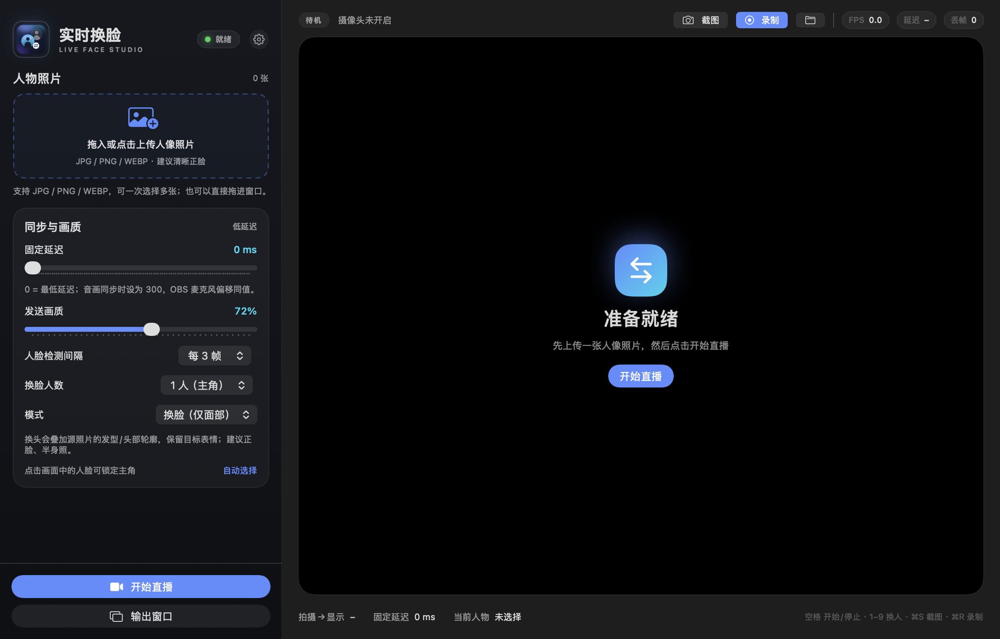
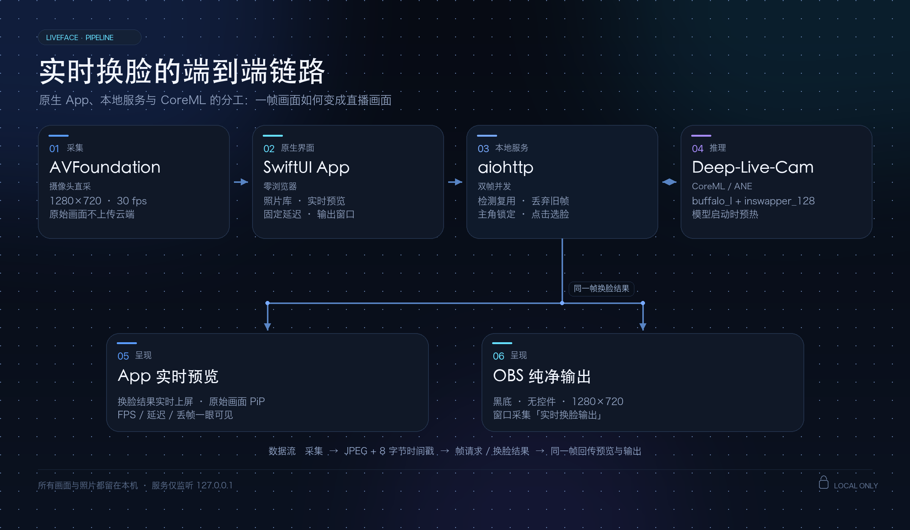

01 / NATIVE
原生 SwiftUI + AVFoundation，
没有浏览器这层中间商。
摄像头直采、本地服务复用、预览按摄像头时钟上屏。窗口、快捷键、设置和输出窗口都按 macOS 的方式工作。
LiveFace Studio 用 SwiftUI + AVFoundation 直接采集，在本机完成换脸、换头、OBS 输出与录音录像。没有浏览器套壳，没有云端上传。

从摄像头采集到 OBS 输出，每一层都为低延迟和可控性重新设计；所有画面只在本机流动。
摄像头直采、本地服务复用、预览按摄像头时钟上屏。窗口、快捷键、设置和输出窗口都按 macOS 的方式工作。
换脸只替换面部；换头在换脸基础上叠加源照片的发型、耳朵和头部轮廓。强度、缩放、上下/左右均可微调。
发送/输出画质、清晰度增强、GPEN-BFR-256 面部增强，外加流畅/均衡/清晰三档预设。
H.264 + AAC 同文件录制；倒计时、最长时长、码率、麦克风开关；暂停后继续不会留空洞。
无控件、黑底、16:9，可置顶、记忆位置；OBS 窗口采集即可，不把控制面板录进去。
服务只监听 127.0.0.1；没有账号、没有云同步。麦克风只在录制时启动；你可以随时关闭。README 里的截图全部来自空照片库。
主界面只保留照片、模式、延迟和直播状态；设备、画质、录制、换头微调收进一个原生设置窗口。
摄像头直采，本地 HTTP 服务最多两帧并发；检测每 N 帧复用，积压时丢弃旧帧。换脸在 CoreML/ANE 上完成，结果回到预览、录制和 OBS 输出。

M3 Pro / 18GB，1280×720 基准，正确性优先。开启面部增强或 4K 会更慢，界面上都有明确提示。
需要 Apple Silicon Mac、macOS 14+、Python 3.12 和 Xcode Command Line Tools。安装脚本会创建虚拟环境、安装依赖并构建原生 App。
# 公开仓库 · 整合版 git clone https://github.com/tsingke/Deep-Live-Cam.git cd Deep-Live-Cam ./install.sh # 首次启动后：允许摄像头 / 麦克风 # 设置 → 画面 → 清晰优先（可选）
保持本地、原生、可控。下一个版本的重点是便携安装和更强的头部模型。
内置 Python 运行时与模型，拷贝即用，不依赖本地环境。体积约 2–3GB。
从 2D 头型/发型融合，走向更完整的 head reenactment 与生成式重建。
摄像头/麦克风、4K、UI 与长时间直播的自动化回归测试。